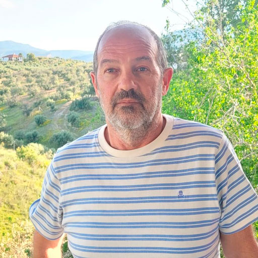

Pedro J. Rey
Professor Titular de Ecologia · Universidade de Jaén
Jaén, Espanha
- Interações bióticas
- Dispersão de sementes
- Polinização
- Ecologia de comunidades
- Regeneração natural de plantas
- Conservação e restauração da biodiversidade
Sobre
Professor Titular de Ecologia na Universidade de Jaén (UJA) desde 2011, onde também atuou como Professor Associado (desde novembro de 1993) e Professor Assistente (desde maio de 2000). É pesquisador principal (PI) da equipe RNM-354 do Plano Regional de Investigação, Desenvolvimento e Inovação (R+D+I) da Andaluzia e da Estrutura de Pesquisa RNM-354 da UJA. Desde 2018, integra o Instituto Interuniversitário de Investigación del Sistema Tierra de Andalucía (IISTA), onde é membro do Comitê Científico e lidera a linha de pesquisa L.11: Ecología, Evolución y Conservación de la Vegetación Mediterránea.
Sua pesquisa dedica-se à ecologia, evolução e dinâmica de populações e comunidades naturais em ecossistemas terrestres mediterrâneos, com ênfase na conservação e restauração da biodiversidade em sistemas agroflorestais e paisagens fragmentadas. Estuda interações bióticas — incluindo herbivoria, insetivoria, dispersão de sementes por animais e polinização — e suas implicações para a regeneração natural de comunidades vegetais e os efeitos do uso do solo e das mudanças climáticas sobre essas interações. Investiga como as interações bióticas moldam traços adaptativos de plantas relevantes para a reprodução e a regeneração natural, e como o equilíbrio entre competição e facilitação contribui para a diversidade de plantas ao longo de amplos gradientes ambientais.
